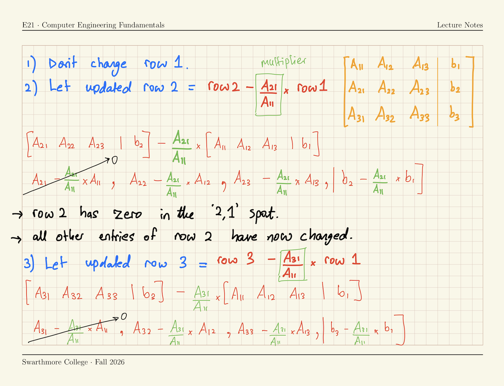
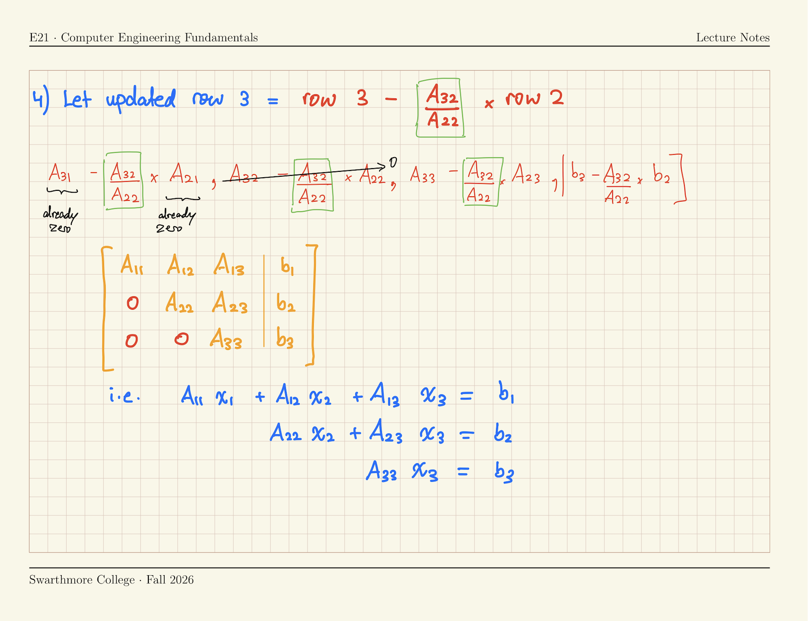

Lecture 16
E21 Computer Engineering Fundamentals
Algorithm for Gaussian Elimination

Algorithm for Gaussian Elimination

Algorithm for backward substitution
\[ \left[\begin{array}{ccc|c} A^*_{11} & A^*_{12} & A^*_{13} & b^*_1 \\ 0 & A^*_{22} & A^*_{23} & b^*_2 \\ 0 & 0 & A^*_{33} & b^*_3 \end{array}\right] \]
\[x_3 = \frac{b_3^*}{A_{33}^*}\] \[x_2 = \frac{b_2^* - A_{23}^* x_3}{A_{22}^*}\] \[x_1 = \frac{b_1^* - A_{13}^* x_3 - A_{12}^* x_2}{A_{11}^*}\]
\[\boxed{x_k = \frac{1}{A^*_{kk}} \left( b^*_k - \sum^n_{j = k +1} \left[ A^*_{kj} x_j \right] \right)}\]
The symbol \(\sum^n_{j = k +1}\) means sum over the term inside square brackets using index \(j\) from \(j = k+1\) to \(j = n\) (inclusive)
The \(*\) reminds us that backward substitution is performed on the row-reduced augmented matrix \(A^* | b^*\), not the originally given problem \(A | b\).
Gaussian Elimination by hand
Simplify the given problem to row-reduced form
Solve \(Ax = b\) where \[ A =\begin{bmatrix} 2 & 1 & -1 & 0\\ 1 & 1 & 2 & 0\\ -1 & 2 & 1 & 1\\ 6 & 1 & 1 & -2 \end{bmatrix}, \quad b = \begin{bmatrix} 1 \\ -1 \\ 0 \\ 2 \end{bmatrix}. \]
By first obtaining a row-echelon form \[ \left[ \begin{array}{cccc|c} A_{11} & A_{12} & A_{13} & A_{14} & b_1\\ 0 & A_{22} & A_{23} & A_{24} & b_2 \\ 0 & 0 & A_{33} & A_{34} & b_3 \\ 0 & 0 & 0 & A_{44} & b_4 \end{array} \right] \]
The solution is \[\displaystyle \left[ \begin{array}{cccc|c} {2} & {1} & {-1} & {0} & {1}\\ {0} & {0.5} & {2.5} & {0} & {-1.5} \\ {0} & {0} & {-12} & {1} & {8} \\ {0} & {0} & {0} & {-5/6}& {7/3} \end{array} \right]\]
Gaussian Elimination in Python
Copy into your Python workspace
A = np.array([[2,1,-1,0],
[1,1,2,0],
[-1,2,1,1],
[6,1,1,-2]],
dtype=np.float64)
b1 = np.array([[1],[-1],[0],[2]],
dtype=np.float64)Write one line of code for each step of Gaussian elimination
# Line-by-line Gaussian elimination
A[1,:] = A[1,:] - (A[1,0]/A[0,0]) * A[0,:]
A[2,:] = A[2,:] - (A[2,0]/A[0,0]) * A[0,:]
A[3,:] = A[3,:] - (A[3,0]/A[0,0]) * A[0,:]
A[2,:] = A[2,:] - (A[2,1]/A[1,1]) * A[1,:]
A[3,:] = A[3,:] - (A[3,1]/A[1,1]) * A[1,:]
A[3,:] = A[3,:] - (A[3,2]/A[2,2]) * A[2,:]- 1
- \(\text{Row 2} = \text{Row 2} - \frac{A_{21}}{A_{11}} \times \text{Row 1}\);
- 2
- \(\text{Row 3} = \text{Row 3} - \frac{A_{31}}{A_{11}} \times \text{Row 1}\)
- 3
- \(\text{Row 4} = \text{Row 4} - \frac{A_{41}}{A_{11}} \times \text{Row 1}\)
- 4
- \(\text{Row 3} = \text{Row 3} - \frac{A_{32}}{A_{22}} \times \text{Row 2}\)
- 5
- \(\text{Row 4} = \text{Row 4} - \frac{A_{42}}{A_{22}} \times \text{Row 2}\)
- 6
- \(\text{Row 4} = \text{Row 4} - \frac{A_{43}}{A_{33}} \times \text{Row 3}\)
Further look inside the Gaussian Elimination algorithm
# Line-by-line Gaussian elimination
A[1,:] = A[1,:] - (A[1,0]/A[0,0]) * A[0,:]
A[2,:] = A[2,:] - (A[2,0]/A[0,0]) * A[0,:]
A[3,:] = A[3,:] - (A[3,0]/A[0,0]) * A[0,:]
A[2,:] = A[2,:] - (A[2,1]/A[1,1]) * A[1,:]
A[3,:] = A[3,:] - (A[3,1]/A[1,1]) * A[1,:]
A[3,:] = A[3,:] - (A[3,2]/A[2,2]) * A[2,:]- 1
- Eliminates \(A_{21}\);
- 2
- Eliminates \(A_{31}\);
- 3
- Eliminates \(A_{41}\);
- 4
- Eliminates \(A_{32}\);
- 5
- Eliminates \(A_{42}\);
- 6
- Eliminates \(A_{43}\);
Original Matrix
\[ \begin{bmatrix} 2 & 1 & -1 & 0 \\ 1 & 1 & 2 & 0 \\ -1 & 2 & 1 & 1 \\ 6 & 1 & 1 & -2 \end{bmatrix} \]
Step 1
\[ \begin{bmatrix} 2 & 1 & -1 & 0 \\ 0 & 1/2 & 5/2 & 0 \\ -1 & 2 & 1 & 1 \\ 6 & 1 & 1 & -2 \end{bmatrix} \]
Step 2
\[ \begin{bmatrix} 2 & 1 & -1 & 0 \\ 0 & 1/2 & 5/2 & 0 \\ 0 & 5/2 & 1/2 & 1 \\ 6 & 1 & 1 & -2 \end{bmatrix} \]
Step 3
\[ \begin{bmatrix} 2 & 1 & -1 & 0 \\ 0 & 1/2 & 5/2 & 0 \\ 0 & 5/2 & 1/2 & 1 \\ 0 & -2 & 4 & -2 \end{bmatrix} \]
Step 4
\[ \begin{bmatrix} 2 & 1 & -1 & 0 \\ 0 & 1/2 & 5/2 & 0 \\ 0 & 0 & -12 & 1 \\ 0 & -2 & 4 & -2 \end{bmatrix} \]
Step 5
\[ \begin{bmatrix} 2 & 1 & -1 & 0 \\ 0 & 1/2 & 5/2 & 0 \\ 0 & 0 & -12 & 1 \\ 0 & 0 & 14 & -2 \end{bmatrix} \]
Step 6
\[ \begin{bmatrix} 2 & 1 & -1 & 0 \\ 0 & \frac{1}{2} & \frac{5}{2} & 0 \\ 0 & 0 & -12 & 1 \\ 0 & 0 & 0 & -\frac{5}{6} \end{bmatrix} \]
The LU Decomposition Method
Any square matrix \(A\) can be written as the product of an upper triangular matrix and a lower traingular matrix, which we call \(U\) and \(L\) respectively.
\(A = L U\)
\(Ax = b \implies L U x = b\)
Let \(Ux = y\). Then, \(L y = b\)
Why do this?
- The two equations \(Ly = b\) and \(Ux = y\) are easy to solve!
\[L = \begin{bmatrix} L_{11} & 0 & 0 \\ L_{21} & L_{22} & 0 \\ L_{31} & L_{32} & L_{33} \end{bmatrix}, U = \begin{bmatrix} U_{11} & U_{12} & U_{13} \\ 0 & U_{22} & U_{23} \\ 0 & 0 & U_{33} \end{bmatrix}\]
Doolittle’s Decomposition
- The \(L\) and \(U\) for a given matrix \(A\) are not unique.
- There are different approaches to finding \(L\) and \(U\) uniquely
- One approach is Doolittle’s Decomposition:
- Let \(L_{11}\), \(L_{22}\), \(L_{33}\) etc. all be equal to 1.
- Now, \(L\) and \(U\) are unique for any \(A\)
- For any given square \(A\), there exist unique \[L = \begin{bmatrix} 1 & 0 & 0 \\ L_{21} & 1 & 0 \\ L_{31} & L_{32} & 1 \end{bmatrix}, U = \begin{bmatrix} U_{11} & U_{12} & U_{13} \\ 0 & U_{22} & U_{23} \\ 0 & 0 & U_{33} \end{bmatrix}\] such that \(A = LU\)
- How do we find \(L\) and \(U\) ?
Doolittle’s Decomposition & Gaussian Elimination
\[L = \begin{bmatrix} 1 & 0 & 0 \\ L_{21} & 1 & 0 \\ L_{31} & L_{32} & 1 \end{bmatrix}, U = \begin{bmatrix} U_{11} & U_{12} & U_{13} \\ 0 & U_{22} & U_{23} \\ 0 & 0 & U_{33} \end{bmatrix}\]
- \(U\) is the row-echelon form of \(A\), found by Gaussian elimination
- \(L_{ij}\) is the ‘multiplier’ used to eliminate \(A_{ij}\) in Gaussian elimination
- Gaussian Elimination of the square matrix \(A\) is equivalent to finding Doolittle’s \(LU\) Decomposition of the square matrix \(A\)
- Why? Perform Gaussian Elimination on the product \(LU\): \[LU = \left[\begin{array}{lll} U_{11} & U_{12} & U_{13} \\ U_{11} L_{21} & U_{12} L_{21} + U_{22} & U_{13} L_{21} + U_{23} \\ U_{11} L_{31} & U_{12} L_{31} + U_{22} L_{32} & U_{13} L_{31} + U_{23} L_{32} + U_{33} \end{array}\right] \]
If you have \(L\) and \(U\), solve \(Ax=b\) …
- Given the linear system of equations \(Ax=b\),
- Write \(A\) as the product of \(L\) and \(U\), i.e. \(LUx = b\).
- Let \(y = U x\).
- Solve \(L y = b\) for \(y\) by forward substitution. \[\begin{bmatrix} 1 & 0 & 0 \\ L_{21} & 1 & 0 \\ L_{31} & L_{32} & 1 \end{bmatrix}\begin{bmatrix} y_1 \\ y_2 \\ y_3 \end{bmatrix} = \begin{bmatrix} b_1 \\ b_2 \\ b_3 \end{bmatrix}\]
- Solve \(Ux=y\) for \(x\) by backward substitution. \[\begin{bmatrix} U_{11} & U_{12} & U_{13} \\ 0 & U_{22} & U_{23} \\ 0 & 0 & U_{33} \end{bmatrix}\begin{bmatrix} x_1 \\ x_2 \\ x_3 \end{bmatrix} = \begin{bmatrix} y_1 \\ y_2 \\ y_3 \end{bmatrix}\]
Banded Matrices
In engineering, we often encounter banded matrices
\[\begin{bmatrix} A_{11} & A_{12} & 0 & 0 & 0 & 0 \\ A_{21} & A_{22} & A_{23} & 0 & 0 & 0 \\ 0 & A_{32} & A_{33} & A_{34} & 0 & 0 \\ 0 & 0 & A_{43} & A_{44} & A_{45} & 0 \\ 0 & 0 & 0 & A_{54} & A_{55} & A_{56} \\ 0 & 0 & 0 & 0 & A_{65} & A_{66} \end{bmatrix}\]
A tridiagonal matrix has 3 bands surrounding the diagonal.
Specialized solvers can be used for these; don’t waste operations on the zeros!
The \(LU\) Decomposition of a banded matrix preserves the banded structure. e.g.,
\[L = \begin{bmatrix} L_{11} & 0 & 0 & 0 & 0 & 0 \\ L_{21} & L_{22} & 0 & 0 & 0 & 0 \\ 0 & L_{32} & L_{33} & 0 & 0 & 0 \\ 0 & 0 & L_{43} & L_{44} & 0 & 0 \\ 0 & 0 & 0 & L_{54} & L_{55} & 0 \\ 0 & 0 & 0 & 0 & L_{65} & L_{66} \end{bmatrix}, U = \begin{bmatrix} U_{11} & U_{12} & 0 & 0 & 0 & 0 \\ 0 & U_{22} & U_{23} & 0 & 0 & 0 \\ 0 & 0 & U_{33} & U_{34} & 0 & 0 \\ 0 & 0 & 0 & U_{44} & U_{45} & 0 \\ 0 & 0 & 0 & 0 & U_{55} & U_{56} \\ 0 & 0 & 0 & 0 & 0 & U_{66} \end{bmatrix}\]
LU Decomposition of Tridiagonal matrices
Solve \(Ax=b\) using LU Decomposition when
\[A = \begin{bmatrix} d_1 & e_1 & 0 & 0 & \cdots & 0 \\ c_1 & d_2 & e_2 & 0 & \cdots & 0 \\ 0 & c_2 & d_3 & e_3 & \cdots & 0 \\ 0 & 0 & c_3 & d_4 & \cdots & 0 \\ \vdots & \vdots & \vdots & \vdots & \ddots & \vdots \\ 0 & 0 & \cdots & 0 & c_{n-1} & d_n \end{bmatrix}\, c = \begin{bmatrix} c_1 \\ c_2 \\ \vdots \\ c_{n-1} \end{bmatrix}\, d = \begin{bmatrix} d_1 \\ d_2 \\ \vdots \\ d_n \end{bmatrix}\, e = \begin{bmatrix} e_1 \\ e_2 \\ \vdots \\ e_{n-1} \end{bmatrix}\]
Gaussian Elimination of second row of \(A\):
\[\boxed{\text{Row k} = \text{Row k} - \frac{A_{21}}{A_{11}} \times \text{Row }(k-1)}\]
Write down a formula for \(c_1\), \(d_2\) and \(e_2\) under one step of Gaussian elimination, in terms of all other \(c\)’s, \(d\)’s and \(e\)’s.
\[ \begin{align} \text{New } c_1 &= c_1 - \frac{c_1}{d_1} \times d_1 \implies c_1 = 0 \\ \text{New } d_2 &= d_2 - \frac{c_1}{d_1} \times e_1 \implies d_2 = d_2 - \frac{c_1}{d_1} e_1 \\ \text{New } e_2 &= e_2 - \frac{c_1}{d_1} \times 0 \implies e_2 = e_2 \end{align} \]
- \(c_1\) is eliminated, \(d_2\) changes, and \(e_2\) doesn’t change.
- The multiplier for Row 2 was \(\left(c_1/d_1\right)\)
Continued
The \(LU\) Decomposition of \(A\) is therefore
\[L = \begin{bmatrix} 1 & 0 & 0 & 0 & \cdots & 0 \\ \lambda_1 & 1 & 0 & 0 & \cdots & 0 \\ 0 & \lambda_2 & 1 & 0 & \cdots & 0 \\ 0 & 0 & \lambda_3 & 1 & \cdots & 0 \\ \vdots & \vdots & \vdots & \vdots & \ddots & \vdots \\ 0 & 0 & \cdots & 0 & \lambda_{n-1} & 1 \end{bmatrix}, \quad U = \begin{bmatrix} d_1^* & e_1 & 0 & 0 & \cdots & 0 \\ 0 & d_2^* & e_2 & 0 & \cdots & 0 \\ 0 & 0 & d_3^* & e_3 & \cdots & 0 \\ 0 & 0 & 0 & d_4^* & \cdots & 0 \\ \vdots & \vdots & \vdots & \vdots & \ddots & \vdots \\ 0 & 0 & \cdots & 0 & 0 & d_n^* \end{bmatrix}\]
- where \(\lambda_k\) is the multiplier used to eliminate \(c_k\),
- the \(*\) indicates that the terms have been (possibly) updated from their original values
Recall that \(LUx = b\) can be solved in two steps:
Forward substitution of \(Ly = b\)
\(\left[\begin{array}{cccccc|c} 1 & 0 & 0 & 0 & \cdots & 0 & b_1 \\ \lambda_1 & 1 & 0 & 0 & \cdots & 0 & b_2 \\ 0 & \lambda_2 & 1 & 0 & \cdots & 0 & b_3 \\ 0 & 0 & \lambda_3 & 1 & \cdots & 0 & b_4 \\ \vdots & \vdots & \vdots & \vdots & \cdots & \vdots & \vdots \\ 0 & 0 & \cdots & 0 & \lambda_{n-1} & 1 & b_n \end{array}\right]\)
Backward substitution of \(Ux = y\)
\(\left[\begin{array}{cccccc|c} d_1^* & e_1 & 0 & \cdots & 0 & 0 & y_1 \\ 0 & d_2^* & e_2 & \cdots & 0 & 0 & y_2 \\ 0 & 0 & d_3^* & \cdots & 0 & 0 & y_3 \\ \vdots & \vdots & \vdots & & \vdots & \vdots & \vdots \\ 0 & 0 & 0 & \cdots & d_{n-1}^* & e_{n-1} & y_{n-1} \\ 0 & 0 & 0 & \cdots & 0 & d_n^* & y_n \end{array}\right]\)